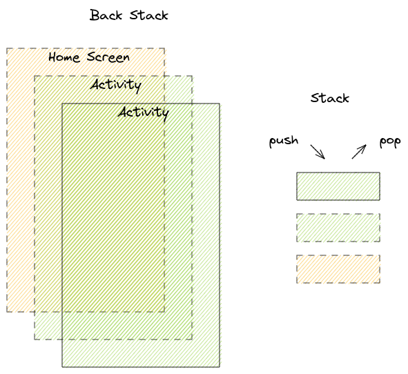
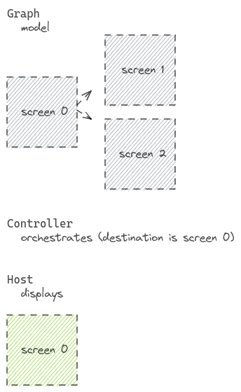
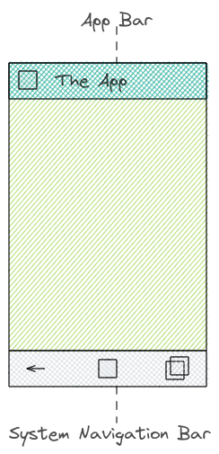
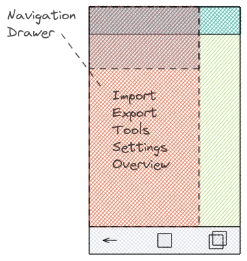

2021-03-18
Give an overview about Android UI components. Know the naming of the components.
The app bar also known as the action bar. Later the toolbar was introduced.
Analogy: an Activity in Android context is like a window in a desktop app. And a desktop app has usually a toolbar.
Android documentation suggest to use Toolbar to implement app bar's (Link: #1)
Unfortunately there are manual steps to use Toolbar. You need to prevent the usage of native ActionBar class.
NoActionBar theme in the AndroidManifest.xml.<application android:theme="@style/Theme.AppCompat.Light.NoActionBar"/>
<com.google.android.material.appbar.AppBarLayout
android:layout_width="match_parent"
android:layout_height="wrap_content"
android:theme="@style/Widget.Design.AppBarLayout">
<androidx.appcompat.widget.Toolbar
android:id="@+id/toolbar"
android:layout_width="match_parent"
android:layout_height="?attr/actionBarSize"
android:background="?attr/colorPrimary" />
</com.google.android.material.appbar.AppBarLayout>
Toolbar as app bar.// this example works with plugin kotlin-android-extensions
// using import kotlinx.android.synthetic.main.activity_main.*
setSupportActionBar(toolbar)
// alternatively you can do it this way.
setSupportActionBar(findViewById(R.id.toolbar))
There are different menu types: options menu (aka. overflow menu), contextual menu and popup menu.
With navigation the movement (back and forth) from screen to screen is meant. You can navigate between different Activies and between Fragments in an Activity.
Historically (or with basic Android building blocks) you implement navigate between the screens with intents and fragment transactions.
Whenever you navigate to a screen the previous screen is arranges in a stack which is called the back stack. It follows the stack principle LIFO (last in, first out). You can go back but not forth when you hit the back button. 
Difference between Activity back stack and Fragment back stack: when you navigate back in an Activity stack you can go back until leaving the App. Navigating within Fragments are similar but the stack boundaries are the Activity which hosts the Fragments (Fragment Manager, Transaction).
Navigation Component is another way to navigate between the screens. The Navigation component is a collection of libraries, plug-in and tooling. It handles the back stack, fragment transactions, argument passing (safe args), deep linking, navigation-based animations.
All the navigation information is centralized and visualised in the Navigation graph. Aside nav graph you should understand the role of NavHost and NavController. The host component acts as the name suggests as a host of the current (destination screen). The controller component on the other side orchestrates the swapping of the screen within the host component (NavHost).
To be more concrete. An activity has the ability to display. Thas why it's obvious to define a NavHost in an activity.

Android provides two system UI components to navigate back on press. One option is the back button in the system navigation bar. Second option is up button in the app bar.

With Navigation UI you can tie navigation destinations with menu items. If you have an options menu and want to navigate to a specific screen then use the same id as the destination id. The navigation-ui-ktx component follows here the convention-over-code principle.
In this menu definition we have an logout item. On click the screen should switch to login fragment.
<item android:id="@+id/loginFragment" android:title="Logout" />
In our navigation graph file we defined the fragment with the same id loginFragment.
<fragment android:id="@+id/loginFragment" />
At this point (Navigation UI component) it make sense also to mention the Drawer component. The navigation drawer shows the navigation menu. You can open it by selecting drawer icon or swipe from left edge.

When navigating you may also want to pass data between the screens. Safe Args plugin generate also classes which can be used for navigation. E.g. you have defined screens (fragments) and connect the screen with actions. To apply the direction you can use the generated class.
val data = "data#payload"
val action = Screen0FragmentDirections.actionScreen0FragmentToScreen1Fragment(data)
findNavController().navigate(action)
To receive the data we use the arguments (variable) which is already given (generated) in our fragment.
val bundle = arguments
bundle?.let {
val args = Screen1FragmentArgs.fromBundle(it)
}
In the code example above we use the defined action to change the screens (from screen0 to screen1). We also pass data (type string). Now before you can use this piece of code you need some pre-steps. Let's have look to the navigation file where we defined an action and an argument.
<!-- FOR THE SAKE OF SIMPLITY BOILERPLATE CODE IS NOT GIVEN -->
<fragment>
<action
android:id="@+id/action_screen0Fragment_to_screen1Fragment"
app:destination="@id/screen1Fragment" />
</fragment>
<fragment>
<argument
android:name="data"
app:argType="string"
android:defaultValue="default-data" />
</fragment>
Safe args is optional so if you want to use it you also need to add the dependencies in your gradle file.
// plugin apply in module gradle
id 'androidx.navigation.safeargs.kotlin'
// dependency in top-level gradle file
classpath "androidx.navigation:navigation-safe-args-gradle-plugin:2.3.4"
Layout's in Android are a huge topic. By time the available layout's evolved. You should basically know to use which layout when.
ConstraintLayout to CoordinatorLayout.RecyclerView is a good choice for large list items.<include> and <merge> layout tags for performance improving and reusing of layouts.DrawerLayout.